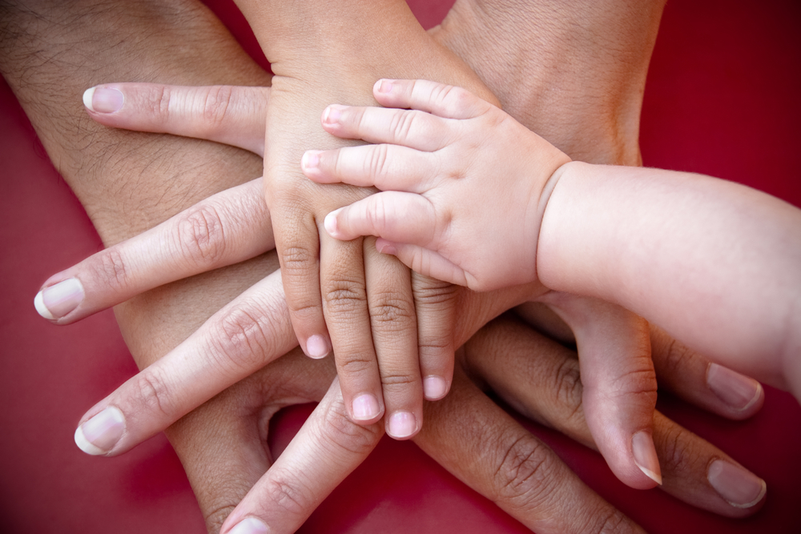

-
Für (werdende) Mütter und Babys
Ich habe mich, als eine von wenigen Psychologinnen, auf die Behandlung von Schwangeren, Säuglingen und jungen Müttern spezialisiert. In dieser sensiblen Zeit, rund um die Geburt und danach, braucht man oft spezielle Unterstützung. Dies verlangt auch ein fundiertes Wissen, welches ich in verschiedenen Seminaren
mehr -
Für Kinder
Kindertherapie ist meistens eine Kombination aus Elterngesprächen und der Einzeltherapie des Kindes. In professionellen Gesprächen mit den Eltern wird zunächst das Problemverhalten des Kindes genau erhoben. Im weiteren Verlauf werden Eltern gecoacht ihr Kind zu unterstützen problematische Verhaltensweisen zu verändern. In der Einzeltherapie des Kindes wird oft durch spielerische Methoden versucht, emotionale Probleme zu beheben
mehr -
Für Jugendliche
Oft ist es für Jugendliche nicht einfach all den Anforderungen, die an sie gestellt werden, gerecht zu werden. Orientierungslosigkeit, Überforderung oder emotionale Probleme sind nur einige Missstimmungen, die häufig bei Teenagern auftreten. Durch meine langjährige Arbeit im Jugendwohlfahrtsbereich bin ich mit den verschiedensten Problematiken vertraut...
mehr -
Für Familien und Eltern
Wenn es einem Familienmitglied nicht gut geht, leidet meistens die gesamte Familie darunter. Deshalb ist es wichtig, frühzeitig professionelle Beratung in Anspruch zu nehmen, um diesen Kreislauf zu unterbrechen. In der Elternberatung genügen oft wenige Gespräche, um eigene Ressourcen und Stärken als Eltern wieder zu finden und um die positiven ... mehr -
Für Erwachsene
Manchmal kommt man in seinem Leben in schwierige Lebenssituationen, in denen einem selbst die Familie und Freunde einfach nicht mehr weiter helfen können. In solchen Lebenslagen ist es hilfreich, sich professionell unterstützen zu lassen, um wieder Lebensqualität und persönliches Wohlbefinden zu erlangen. Man entdeckt dadurch bei sich...
mehr -

Beratung für Eltern in Scheidungssituationen
Trennung und Scheidung sind für Eltern eine schmerzliche Erfahrung. Sehr oft sitzen emotionale Verletzungen, die durch die Trennung entstanden sind, tief in einem fest. Es ist für viele Eltern oft schwierig, in einer solchen emotionalen Ausnahmesituation, die Bedürfnisse des gemeinsamen Kindes... mehr -
Vorträge
Vorträge im Eltern Beratungszentrum Voitsberg
(Haus des Lebens: Conrad-von Hötzendorf-Straße 25b):
Rund um die Entwicklung in den ersten 3 Lebensjahren
Informationen – Tipps – Diskussion
mehr